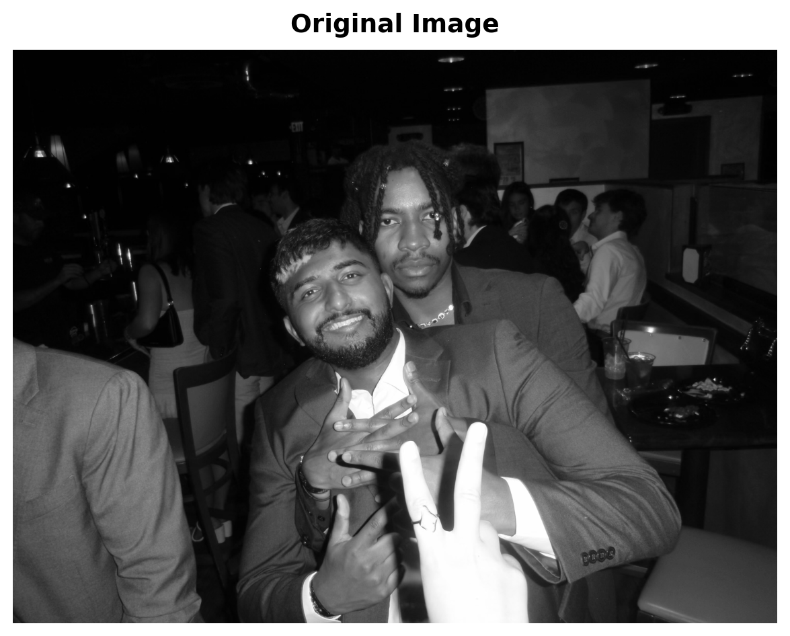
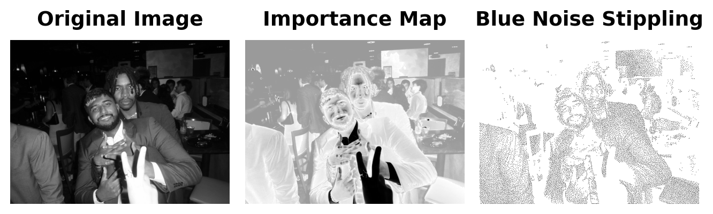
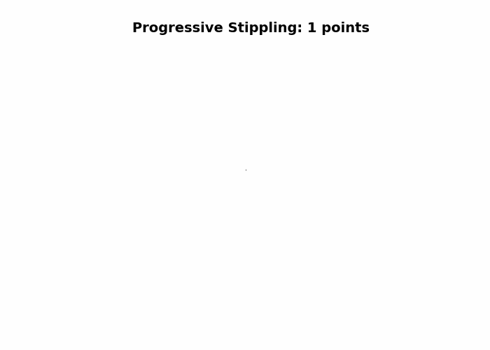

Image shape: (1488, 1984)
Image size: 1488x1984 pixelsBlue Noise Stippling: Creating Art from Data
Your Task: Reproduce the blue noise stippling process demonstrated below to create: 1. A stippled version of your chosen image 2. A progressive stippling GIF animation 3. Post both to a GitHub Pages site with appropriate captions and a brief explanation
Part 2 Preview: On November 18th, we’ll tackle Part 2 of this challenge, where you’ll create a statistical meme about selection bias and missing data using your stippled images.
Core Question: How can we convert a photograph into an aesthetically pleasing pattern of dots that preserves the visual information of the original image?
The Challenge: Blue noise stippling is a technique that converts images into patterns of dots (stipples) using algorithms that balance visual accuracy with spatial distribution. This challenge asks you to implement a modified “void and cluster” algorithm that combines importance sampling with blue noise distribution properties to create stippling patterns that are both visually accurate and spatially well-distributed.
Our Approach: We’ll use a modified void-and-cluster algorithm that: 1. Creates an importance map identifying visually important regions 2. Uses a toroidal (periodic) Gaussian kernel for repulsion to ensure blue noise properties 3. Iteratively selects points with minimum energy 4. Balances image content importance with blue noise spatial distribution
This challenge pushes boundaries intentionally. You’ll tackle problems that normally require weeks of study, but with Cursor AI as your partner (and your brain keeping it honest), you can accomplish more than you thought possible.
The new reality: The four stages of competence are Ignorance → Awareness → Learning → Mastery. AI lets us produce Mastery-level work while operating primarily in the Awareness stage. I focus on awareness training, you leverage AI for execution, and together we create outputs that used to require years of dedicated study.
Blue noise stippling is a technique for converting images into a pattern of dots (stipples) that preserves the visual information of the original image while creating an aesthetically pleasing, evenly distributed pattern. This method follows the approach described by Bart Wronski.
The method uses a modified “void and cluster” algorithm that combines importance sampling with blue noise distribution properties to create stippling patterns that are both visually accurate and spatially well-distributed. This version uses smooth extreme downweighting that selectively downweights very dark and very light tones while preserving mid-tones, creating a more balanced distribution of stipples across the image.
First, let’s load an image that we’ll convert to a blue noise stippling pattern. You can use any image you’d like, but we’ll demonstrate with the provided example.

Image shape: (1488, 1984)
Image size: 1488x1984 pixelsBefore applying the stippling algorithm, we create an importance map that identifies which regions of the image should receive more stipples. The importance map is computed by:
The stippling algorithm uses a modified void-and-cluster approach that:
Before generating the stippling pattern, we prepare the image by resizing if necessary and computing the importance map.
Resized image from (1488, 1984) to (384, 512) for processing
Final image shape: (384, 512) (should be 2D for grayscale)
Importance map computedNow let’s apply the stippling algorithm to create the blue noise stippling pattern.
Generating blue noise stippling pattern...
Generated 15728 stipple points
Stipple pattern shape: (384, 512)Let’s visualize the original image, the importance map, and the stippled version side by side for comparison.

This section creates a GIF showing how the stippled image looks as more points are added sequentially. We’ll use the already-computed stippling points to generate frames at increments of 100 points.
Using existing stippling with 15728 points
Image shape: (384, 512)
Generated 159 frames
Point counts: [1, 100, 200, 300, 400, 500, 600, 700, 800, 900, 1000, 1100, 1200, 1300, 1400, 1500, 1600, 1700, 1800, 1900, 2000, 2100, 2200, 2300, 2400, 2500, 2600, 2700, 2800, 2900, 3000, 3100, 3200, 3300, 3400, 3500, 3600, 3700, 3800, 3900, 4000, 4100, 4200, 4300, 4400, 4500, 4600, 4700, 4800, 4900, 5000, 5100, 5200, 5300, 5400, 5500, 5600, 5700, 5800, 5900, 6000, 6100, 6200, 6300, 6400, 6500, 6600, 6700, 6800, 6900, 7000, 7100, 7200, 7300, 7400, 7500, 7600, 7700, 7800, 7900, 8000, 8100, 8200, 8300, 8400, 8500, 8600, 8700, 8800, 8900, 9000, 9100, 9200, 9300, 9400, 9500, 9600, 9700, 9800, 9900, 10000, 10100, 10200, 10300, 10400, 10500, 10600, 10700, 10800, 10900, 11000, 11100, 11200, 11300, 11400, 11500, 11600, 11700, 11800, 11900, 12000, 12100, 12200, 12300, 12400, 12500, 12600, 12700, 12800, 12900, 13000, 13100, 13200, 13300, 13400, 13500, 13600, 13700, 13800, 13900, 14000, 14100, 14200, 14300, 14400, 14500, 14600, 14700, 14800, 14900, 15000, 15100, 15200, 15300, 15400, 15500, 15600, 15700, 15728]Now let’s create the GIF animation:

Part 1 (This Challenge): Reproduce the blue noise stippling process to create:
Part 2 (November 18th): We’ll use your stippled images to create a statistical meme about selection bias and missing data. More details will be provided in Part 2.
Fork and Clone Repository: Use the starter repository (if provided) or create your own GitHub repository for this challenge
Reproduce the Stippling Process:
GitHub Pages Setup:
Code Organization:
75% Grade Requirements: - Successfully reproduce the stippling algorithm - Create a stippled image and progressive GIF - Basic GitHub Pages site with images and captions
85% Grade Requirements: - All of the above, plus: - Clear explanation of how blue noise stippling works - Discussion of why the algorithm creates aesthetically pleasing patterns - Professional presentation of results
95% Grade Requirements: - All of the above, plus: - Experimentation with different parameters (percentage, sigma, etc.) - Discussion of how parameter choices affect the final result - Comparison of different parameter settings
100% Grade Requirements: - All of the above, plus: - Exceptional presentation and documentation - Creative use of the stippling technique - Insightful analysis of the algorithm’s behavior - Professional-quality GitHub Pages site
“Slow is Smooth and Smooth is Fast”
Take your time to understand the stippling algorithm, plan your approach carefully, and execute with precision. Rushing through this challenge will only lead to errors and confusion.
Before you start: Make sure to commit your work often using the Source Control panel in Cursor (Ctrl+Shift+G or Cmd+Shift+G). This prevents the AI from overwriting your progress and ensures you don’t lose your work.
Commit after each major step: - After implementing the importance map function - After implementing the stippling algorithm - After creating your stippled image - After creating your GIF animation - After setting up GitHub Pages
Remember: Frequent commits are your safety net!
Minimum Requirements (Required for Any Points):
75% Grade Requirements:
85% Grade Requirements:
95% Grade Requirements:
100% Grade Requirements: